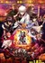

| 1 |
Sousou no Frieren
TV (28 eps)
Sep 2023 - Mar 2024
403,086 votes
|
9.14 |
Ongoing |
| 2 |
Fullmetal Alchemist: Brotherhood
TV (64 eps)
Apr 2009 - Jul 2010
3,272,944 votes
|
9.09 |
Ended |
| 3 |
Steins;Gate
TV (24 eps)
Apr 2011 - Sep 2011
2,512,664 votes
|
9.07 |
Ended |
| 4 |
Gintama°
TV (51 eps)
Apr 2015 - Mar 2016
616,968 votes
|
9.06 |
Ended |
| 5 |
Shingeki no Kyojin Season 3 Part 2
TV(10 eps)
Apr 2019 - Jul 2019
2,206,444 votes
|
9.05 |
Ended |
| 6 |
Bleach: Sennen Kessen-hen
TV (13 eps)
Oct 2022 - Dec 2022
505,974 votes
|
9.04 |
Ended |
| 7 |

Gintama: The Final
Movie (1 eps)
Jan 2021 - Jan 2021
143,440 votes
|
9.04 |
Ended |
| 8 |
Hunter x Hunter (2011)
TV (148 eps)
Oct 2011 - Sep 2014
2,756,332 votes
|
9.04 |
Ended |
| 9 |
Gintama'
TV (51 eps)
Apr 2011 - Mar 2012
544,452 votes
|
9.03 |
Ended |
| 10 |
Gintama': Enchousen
TV (13 eps)
Oct 2012 - Mar 2013
319,099 votes
|
9.03 |
Ended |
| 11 |
Kaguya-sama wa Kokurasetai: Ultra Romantic
TV (51 eps)
Apr 2015 - Mar 2016
616,968 votes
|
9.03 |
Ended |
| 12 |
Ginga Eiyuu Densetsu
OVA (110 eps)
Jan 1988 - Mar 1997
314,441 votes
|
9.02 |
Ended |
| 13 |
Fruits Basket: The Final
TV (201 eps)
Apr 2006 - Mar 2010
1,048,349 votes
|
8.99 |
Ended |
| 14 |
Gintama°
TV (12 eps)
Jan 2017 - Mar 2017
308,096 votes
|
8.98 |
Ended |
| 15 |
Gintama
TV (201 eps)
Apr 2006 - Mar 2010
1,048,349 votes
|
8.94 |
Ended |
| 16 |
Shingeki no Kyojin: The Final Season
TV Special (2 eps)
Mar 2023 - Nov 2023
576,445 votes
|
8.94 |
Ongoing |
| 17 |

Koe no Katachi
Movie (1 eps)
Sep 2016 - Sep 2016
2,270,578 votes
|
8.93 |
Ended |
| 18 |
3-gatsu no Lion 2nd Season
TV (22 eps)
Oct 2017 - Mar 2018
394,559 votes
|
8.93 |
Ended |
| 19 |
Clannad: After Story
TV (24 eps)
Oct 2008 - Mar 2009
1,174,534 votes
|
8.93 |
Ended |
| 20 |

Jujutsu Kaisen 2nd Season
TV (23 eps)
Jul 2023 - Dec 2023
721,706 votes
|
8.92 |
Ongoing |